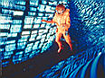
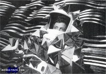
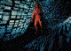
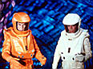
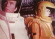
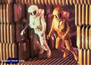
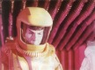
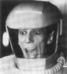

Star Trek - The Motion Picture
|
| 07.12.1979, 132 minuti | |
| Storia | Alan Dean Foster |
| Screenplay | Harold Livingston |
| Musiche | Jerry Goldsmith |
| Regia | Robert Wise |
| Produttori | Gene Roddenberry Jon Povill (associato) |
| Costo | 44 milioni di dollari |
| Incassi al botteghino | 112 milioni di dollari |
| Sonoro | Dolby |
| Effetti Speciali | Robert Abel & Associates Apogee |
| Rating americano | G |
Cast
| Amm. James Tiberius Kirk | William Shatner |
| Assistente al teletrasporto | John D. Gowans |
| Attendente | Leslie C. Howard |
| Capitano klingon | Mark Lenard |
| Cap. Montgomery Scott | James Doohan |
| Cap. Spock | Leonard Nimoy |
| Cap. Willard Decker | Stephen Collins |
| Capo DiFalco | Marcy Lafferty |
| Capo Ross | Terrence O'Connor |
| Commander Branch | David Gautreaux |
| Commander Sonak | Jon Rashad Kamal |
| Dr. Leonard "Bones" McCoy | DeForest Kelley |
| Dr. Christine Chapel | Majel Barrett |
| Hikaru Sulu | George Takei |
| Janice Rand | Grace Lee Whitney |
| Maestri vulcaniani | Edna Glover Norman Stuart Paul Weber |
| Equipaggio dell'Enterprise | Paula Crist Susan J. Sullivan |
| Equipaggio del ponte dell'Enterprise | Ralph Brannan Ralph Byers Iva Lane Franklyn Seales Momo Yashima |
| Equipaggio klingon | Jimmie Booth Joel Kramer Bill McTosh Dave Mordigan Tom Morga Tony Rocco Joel Schultz Craig Thomas |
| Pavel Chekov | Walter Koenig |
| Stunt | Robert Bralver William Couch Keith L.Jensen John Hugh McKnight |
| Tecnici | Sayra Hummel Junero Jennings |
| Tecnico della camera stagna | Gary Faga |
| Tecnico di Epsilon IX | Roger Aaron Brown |
| Tenente alieno | Billy Van Zandt |
| Tenente Cleary | Michael Rougas |
| Tenente del ponte cargo | Howard Itzkowitz |
| Tenente di Epsilon IX | Michele Ameen Billy |
| Ten. Ilia | Persis Khambatta |
| Ufficiali della sicurezza | John Dresden Joshua Gallegos Rod Perry |
| Uhura | Nichelle Nichols |
| Voce del computer | Doug Hale |
Data Stellare 7412.6: Cinque anni dopo il termine della missione quinquennale, l'Enterprise, completamente ristrutturata, deve far fronte alla minaccia di un'astronave aliena che si definisce V'ger.
Sonak: The Enterprise is in final preparation to leave dock.
Which will require twenty more hours at minimum...
Kirk: Twelve. I an my way to a meeting with Admiral Nogura wich will not
last more than three minutes. Report to me on the Enterprise in one hour.
Sonak: Report to you, Sir?
Kirk: It is my intention to be on that ship, following that meeting.
Report to me in one hour. [T:0:14:11]
Kirk: They gave her back to me, Scotty.
Scott: Gave her back ,sir? I doubt it was that easy with Nogura.
Kirk: Y'er right.
Scott: Well, any man that could manage such a feat, I would not dare to
disappoint. She'll launch on time, sir, and she'll be ready.
Kirk: Well, for a man that swore he'd never to return to Starfleet...
McCoy: Just a moment, Captain Sir. I'll explain what happened. Your
revered Admiral Nogura invoked a little known, seldom-used reserve activation
clause. In simpler language Captain, they drafted me!
Kirk: They didn't.
McCoy: This was your idea. This was your idea, wasn't it?
Kirk: Bones, there's a thing out there.
McCoy: Why is any object we don't understand always called a thing?
Kirk: Headed this way. I need you. Damn it, Bones, I need you. Badly!
[T:0:35:10]
Kirk: I'm sorry, Will.
Decker: No, Admiral. I don't think you're sorry. Not one damned bit. I
remember when you recommended me for this command. You told me how envious you
were and how much you hoped you would get a starship command again. Well sir, it
looks like you found a way.
Kirk: Well, Bones, do the new medical facilities meet with your
approval?
McCoy: They do not. It's like working in a damn computer center.
Uhura: Dock control reports ready, Sir.
Sulu: Helm ready, Sir.
Ilia: Orbital display on plot, Sir.
Uhura: Yard command signaling clear, Sir.
Kirk: Maneuvering thrusters, Mr. Sulu.
Sulu: Maneuvering thrusters, Sir.
Kirk: Hold stations.
Sulu: Thruster at station keeping, Sir.
Chekov: No casualties reported, Doctor.
McCoy: Wrong Mr. Chekov. There are casualties... my wit's as in
frightened out of Captain Sir.
McCoy: Spock... You haven't changed a bit. You're just as warm and
sociable as ever.
Spock: Nor have you, Doctor, as your continued predilection for
irrilevancy demonstrates.
Kirk: Evaluation, Mr. Spock.
Spock: Fascinating.
Spock: Logic and knowledge are not enough.
Decker: We all create God in our own image.
Di Falco: Heading, sir?
Kirk: Out there. That way.
Questi sono alcuni brani dello script le cui scene non sono state incluse nell'edizione originale del film e dovevano essere presenti nell'edizione in DVD, ma sono state poi tolte anche da quell'edizione.
273 INT. V'GER - ANGLE UP TOWARD ENTERPRISE (M)

The ship stationary in the chamber as now we SEE an exterior hatch sliding
fully open. Up through the hatch a circular airlock door opens - and a
TINY FIGURE in a thruster spacesuit emerges, steps into space, slowly
floats down through the hatch and under the Enterprise saucer section.
In this and subsequent VIEWS we will SEE that on the rear pack of his
thruster spacesuit is a FLASHING STROBELIGHT which regularly EMITS the
identifying SIGNAL of this particular suit (By which Kirk will be able to see Spock's
position from even several miles away.)
MOVING TOWARD the CAMERA until the features behind the face mask are clearly identifible:
Spock, his face set in the same grim, determined expression as he touches his space suit
transmitter control.
SPOCK :
Computer, commence recording. Captain Kirk - this message will detail my
attempt to contact the aliens...
INT. BRIDGE
Questa scena appare anche nella versione originale del film: Chekov informa che l'airlock quattro è stato utilizzato e che manca una tuta spaziale.
Kirk, knowingly is Spock, orders Chekov to get a fix on Spock's position and EXITS hurriedly. 276 INT V'GER - MED. ON SPOCK His features now set in an almost trance-like expression as he concentrates on the thought emanations. Then we SEE his head turn, he peers off - then he moves his thruster controls. We SEE the small blue jets of the thrusters - his spacesuit figure begins to move off in the direction he was concentrating upon. 277 ANOTHER ANGLE - SPOCK

His thrusters moving him across V'Gers's vast chamber then dropping down in a deep "trough"-like area which stretches into distance ahead of him. A cloud of CRYSTAL FORMS (Kirk's entrapment) become visible to one side but Spock passes them at some distance and does not attract them. We can SEE more clearly now the point along the inner wall off the trough toward which Spock is heading. Its a unusual combination of GLOWING FORCEFIELDS which seem to mark this point of the vessel as of some importance.
278 - AIRLOCK AREA to 282 ANGLE ON KIRK
La scena da quando McCoy discute con Kirk mentre alcuni marinai lo aiutano ad infilarsi la tuta fino a quando Kirk rileva la posizione di Spock la si può vedere nell'edizione speciale del film uscita in videocassetta. Anche un' altra scena, tra la 283 e la 286, che mostra Ilia nel suo alloggio con Decker e McCoy può essere vista nella videocassetta dell'edizione speciale del film.
Kirk touches his thruster controls and blue thruster jets propels him into the direction indicated.
His thrusters come on for a long period of time as he accelerates to the higher speed necessary
to overtake Spock...
INT. V'GER - KIRK MANEUVERING WITHIN THE CHAMBER
Kirk but a small object, thruster jets occasionally spurting as he guides him self deeper
into the trench as he continues forward progress in the direction he saw Spock taking.
289 KIRK'S POV
Spock's STROBE signal closer and Spock's tiny spacesuited figure now becoming dimly visible
as he moves steadily toward the GLOWING FORCEFIELDS of the inner wall.
290 ON KIRK
His attention fixed on Spock. He never notices until an instant too late an O.S. object;
quickly he hits he thruster control, and we SEE the MANEUVERING JET turn him to the side as:
291 WIDER ANGLE - KIRK AND THE BLOB FORMATION
A swarn of strange-looking translucent crystal-like FORMS on a collision course with Kirk.
292 MED. SHOT - KIRK (O)
As the nearest crystal forms WHIP INTO THE SHOT, adhering to Kirk's spacesuit. He hits full
MANEUVIRING JETS now, seems to make some escape but still more forms WHIP IN, adhere.
KIRK :
Bridge !
INT. BRIDGE - EMPHASIZING HELM
All eyes are anxiously on the O.S. main viewer.
KIRK'S VOICE
....stand by, I may be in trouble...
ANGLE ON THE MAIN VIEWER (M)

As the distant STROBLE FLASHES of Kirk's spacesuit are MAGNIFIED CLOSER, pulling Kirk into a MEDIUM LONG SHOT. We can see the details of the swarn of forms adhering. But we can SEE that Kirk's spacesuit is now about half covered with them!
294 REVERSE ANGLE Expressions of the bridge crew to refletc the horror of what they are seeing as : SULU : Your phaser, Captain....! Use your phaser...! KIRK'S VOICE (transmitter weak) Can't....reach....phas- (transmission breaks off into heavy STATIC). CHEKOV : Airlocks two and four - prepare to lauch rescue teams! (glancing into viewer) Chief Lang! Get them out there! Fast! SULU : Mr Spock, the captain is in trouble, directly behind you - three hundred meters! (beat) Mr Spock ! Looks of distress are exchanged. 295 INT.V'GER - SPOCK Spock's spacesuit figure MOVING TOWARD the CAMERA, as we HEAR : KIRK'S VOICE (weak, STATIC) : ....Spock...! ... need help...!... trapped...!

No indication at first that Spock has heard; his face set with determination, his eyes fixed on his destination: the inner wall.
KIRK'S VOICE (continuing; weakening; STATIC) : ...pressure on me...!...can't move...!...Spock...! 296 ON SPOCK - CLOSE As Kirk's VOICE STOPS - and all that is heard now is the HEAVY STATIC crackling ominously. Spock's expression flicker, then he hit's reverse thruster JETS, stops - he turns to glence at the inner wall, then hit's reverse thruster JETS, stops - he turns to glance at the inner wall, then his thruster's turn him so he can look back the way he came. But he cannot resist Kirk's call; he sundelly hits his thruster controls, the JETS FLARE, and : WIDER ANGLE - SPOCK As his thruster JETS accelerate him back toward Kirk. 298 INT. BRIDGE - VIEWER (M) Showing Kirk's spacesuit completely covered, encased in the blobs. Kirk is no longer moving. But in the distance, facing toward him is Spock! 299 INT. V'GER - KIRK AND SPOCK With Spock in the near distance, heading TOWARD the CAMERA. As he approaches Kirk, Spock brings out is phaser. Now he hits the controls for REVERSE JETS - he slow RAPIDLY as he approaches Kirk's now completely encased spacesuit. Spock makes a quick phaser adjustment. 300 ANGLE ON SPOCK AND KIRK'S ENCASED SPACESUIT (O) (S) Spock levels the phaser carefully. FIRES. The PHASER BEAM striking the blob form - it SHATTERS, the pieces DESINTREGRATING. 301 INT V'GER - SPOCK AND KIRK Facing each other while hovering in space. KIRK : Bridge, cancel rescue teams. (hard) Spock, what in the hell are you doing out here! SPOCK : I am seeking answers, Captain. KIRK (with insight) : Answers to what, Spock? Our dilemma - or your personal one?

Spock does not immediately reply, peers at Kirk through the faceplate a long beat, then abruptly looks away, points off in the distance.
302 ANOTHER ANGLE - INCLUDING INNER WALL (O) We can SEE what appears to be SPARKLING GLOBES of LIGHT darting toward the inner wall in the distance, then dissapearing there. SPOCK (pointing) : Captain, I believe there we will find an indication of whoever - or whatever - is aboard this vessel...

Kirk's weights alternatives, then pushes his thruster controls and begins moving in the direction Spock indicated. There thruster JETS flash, propel them toward that point in the inner wall.
303 INT. V'GER AT INNER WALL The most prominent ares of the vast inner wall - the patterns on the wall here seem to glow with life. The spacesuited figures of Kirk and Spock ENTER SCENE, gliding slowly toward what seems to be the central of these patterns. 304 CLOSER ON KIRK AND SPOCK As they approach and then we SEE the brief REVERSE THRUSTERS and then forward momentum stops; motionless. Spock sees something. 305 LONG ANGLE TO INCLUDE SENSOR SWARM Now, we SEE that they are tiny, multi-colored points of flashing light - almost like a swarm of bees. They approach the inner wall at this central point and then seem to "dissapear" through the orifice. 306 KIRK AND SPOCK - ANOTHER "SWARM" APPROACHING (O) This "sensor swarm" has been coming from a direction that will take them close past Kirk and Spock. Then, as it passes, Spock reaches out quickly, grabs. He turns to Kirk, his hand closed on something. 307 CLOSE ON KIRK AND SPOCK (AGAINST "TUBE" WALL) Spock he-opens his hand, retaininga hold on something with his fingers. He brings it up to Kirk's face mask - it's a tiny SENSOR, its multi-colors flashing as it tries to escape Spock's fingers. And in this CLOSE VIEW, we SEE that this is a SENSOR very much like the one we've seen imbedded in the Illia-probe's throat hollow. Then Spock releases it and it darts to join the sensor swarm near the opening of the inner wall. 308 KIRK AND SPOCK'S POV (O) From the closer distance, we SEE that an opening appears in the wall, admits the sensor swarm, then closes imediately. 309 BACK TO SHOT Kirk and Spock exchanges a look. Their thruster JETS ignite briefly, moving them in that direction. 310 INT V'GER - KIRK AND SPOCK (O)

Closely approaching the inner wall now, timing their movement to coincide with the arrival of another "swarm" - and the wall begins OPENING. The "swarm" through, the wall begins CLOSING - but Spock and Kirk slip in before it closes.
311 INT "MEMORY CAVE" - SPOCK AND KIRK The wall closing behind them, they are safely inside. But as they stop their foward momentum, their eyes WIDEN with AWE and SURPRISE at what they are seeing: 311A WHAT THEY SEE (M) The long "cave" chamber with its row of huge MEDITATOR BALLS extending into the distance. To one side, the gleaming CRYSTAL MEMORY WALL. 311B KIRK AND SPOCK As Spock makes a quick analisys and estimate of what they are seeing. Then, he takes out his tricorder again, propels himself toward the memory crystals. Kirk follows. 311C AT MEMORY CRYSTAL As Spock adjusts his tricorder through several readings. SPOCK : It would appear that the atomic arrays of these crystals store information. A remarkably efficient device. KIRK (indicates) : And these "sensor-swarms" collect that data, carry it here. SPOCK (nods, indicates) : New crystals: they must contain the most recent data obtained -

And Spock touches one of these new crystals (it will be shinner, more
pulsanting than the others): ANOTHER RAPID PROFUSION OF FAINT IMAGES,
but this time including a pattern-like image of Klingons, Klingon
vessells (the ones destroyed by the Cloud) and obvious Starfleet
personnel - and the Epsilon 9 station. Also, a pattern of the Security
Guard killed by the probe. And Ilia.
KIRK :
Klingons....and our Epsilon 9 station...they seem to be more than just images....
SPOCK (agreeing) :
Exact patterns. The energy bolt that hit wasn't simply a weapon - it desmaterialized
them, stored them. But why?
And he turns and begins moving on, studying the wall, consulting his tricorder.
312 ACROSS THEM TO ANOTHER SECTION OF THE WALL
Spock inspecting this area at which the "newer"crystals are PULSATING and GLOWING, and which appears
to be a termination of the Crystal area, continuing on and dissapearing through the wall.
KIRK :
If this is their ship data banks, where is the crew ? Or is their entire ship
automated?
SPOCK :
Captain, I do not believe that there is a crew - or that this is a vessel as such.
A beat, as Kirk reacts incredulously.
SPOCK (continuing):
I am almost certain now that all this is V'Ger - that we are inside a life form,
a living machine.
Spock turns his spacesuit, turns his tricorder out and toward the Meditator Balls,
takes a reading in that direction. Then a glance at Kirk.
SPOCK :
I must attempt to mindmeld with it, Captain.
Spock touches his spacesuit controls, the THRUSTER JETS move him out toward the Meditator Balls.
KIRK (warningly) :
Spock...
313 ANGLE AT MEDITATOR BALL
Spock reaches the ball, halts his momentum and removes one gaunlet, baring his hand. Stretching
the bare hand toward a part of it which looks strangely "alive". The very power generated
from this area is clearly affecting Spock's hand. Meanwhile, Kirk has used his THRUSTERS to join him.
KIRK :
Spock, if you're right, its mind may be enormous...
But Spock pays him no attention, his entire being now focused on the PULSATING GLOW of the "alive"
area - the CAMERA MOVING CLOSER TO Spock, as he forces his hand toward that surface, closer, closer.
314 KIRK :
Watching, almost mesmerized. Torn between wanting to pull Spock away from the wall - and knowing that
Spock must go through with it. For everyone's sake.
315 CLOSER ON SPOCK
Preparing for the ordeal, moving his hand to the "living area", "the invisible forces even
stronger - but Spock's strenght unwavering, and now touches the surface - and it FLARES WITH STRANGE ENERGY
at the touch. And at the same moment Spock's body convulses as if tens of thousands of volts of
eletricity are charging through him.
316 CLOSE ON SPOCK'S FACE

As he begins to shudder with the shock, the CAMERA CONTINUES INTO EXTREME CLOSEUP as we SEE Spock's mounth open - he SCREAMS. CAMERA INTO EXTREME CLOSEUP OF SPOCK'S EYES.
317 CAMERA ZOOM - THROUGH SPOCK'S EYES. MUSIC IN AND UP as we travel through ABSTRACT IMAGES (per Con Pederson discussion). Symbolizing V'Ger's incredible and complex store of mechanistic knowledge, these IMAGES suggest patterns of atoms, molecules, galaxies, dimensions of the universe beyond human kwonledge or comprehension. It takes only fifteen or twnty seconds, but seems to span aeon's, taking us through micro-infinity and macro-infinity. DISSOLVE TO: 318 INT. DISPENSARY - SPOCK'S EYE CAMERA BRIDGING BACK THROUGH SPOCK'S EYES AND INTO ANGLE ON SPOCK'S FACE as he lies in a sickbay bed. His eyes are open; he is staring straight ahead as if in a catatonic state, completely unware of his surrondings.Then Doctor Chapel leans INTO SCENE, moving a medical scanner over the brain area. CHAPEL: Now scanning pons area at spinal nerve fiber connection....